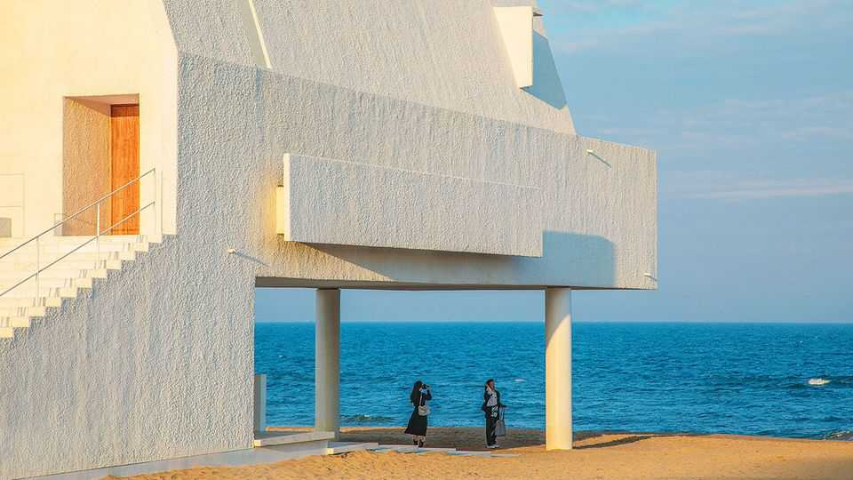
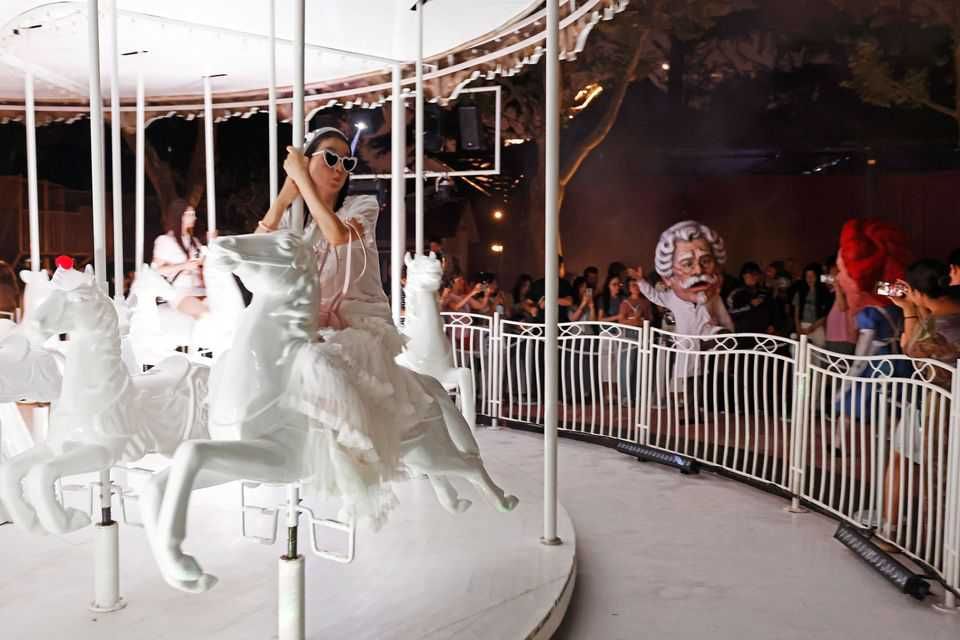

Can China finally relax?
The hard-working society wants to kick back more, but faces constraints

Sep 10th 2026
NEAR BEIDAIHE, the seaside resort where China’s leaders gather for their summer conclave, sits Aranya, a gated complex known as “a middle-class utopia”. Visitors kite-surf, meditate and stroll down manicured streets where many have second homes. More than 4.6m tourists visited last year, up from 3.4m in 2024. They queue for the minimalist canteens, attend theatre, music and film festivals, and admire the brutalist library. The emergence in China of a bourgeoisie has not led to democracy, as many hoped. But it has fuelled a leisure industry catering to affluent, overworked people in search of personal fulfilment. “Aranya is so popular because it embodies the way people were meant to live,” says Gao Pei, a teacher from Beijing who bought a holiday home there this year.
The “leisure class”, defined by Thorstein Veblen, an American economist, in the late 19th century, is made up of people showing off how little they need to work. In China, it is still small. But a much broader swathe of society values leisure. By 2025 more than half of urban Chinese households (around 200m of them) counted as upper-middle class or above, making at least 165,000 yuan (about $23,000) a year, reckons McKinsey, a consultancy.
Discussions of China’s work culture stress two extremes: “996” (working nine to nine, six days a week); and “lying flat” (quitting the rat race altogether). But most of China’s middle class lies in between. They want to work a bit less. And they want to get more out of their free time.
Spending on culture, sport and other leisure is a bright spot in a gloomy retail sector. Some hiking guides who previously counted only foreigners as clients now serve Chinese customers decked out in new gear as more take to the hills for the first time. The Communist Party seems happy for people to enjoy leisure, which can open their wallets and recharge them for work, so long as they do not drop out in disillusionment or rise up in disaffection. In a bookshop in Aranya a visitor photographs a fridge magnet proclaiming: “It’s legal to take a break.”
China long needed that reminder. Its work ethic is deeply entrenched. The proverb wanwu sangzhi warns that “indulgence in play ruins ambition.” Attitudes began to shift after Deng Xiaoping spearheaded radical market-oriented economic reforms in the late 1970s. Then in 1995 the government introduced a two-day weekend (laxly enforced) and in 1999 three week-long holidays called “golden weeks”.
As China got richer, working hours declined. Leisure became a “standard feature of life”, as a recent report by a government think-tank put it. Wang Qiyan of Renmin University, who has for decades surveyed how people in China spend their time, points to 2017-18 as when they started “living like real humans” and were happiest: sleeping enough, playing more and making decent money. Slower economic growth has recently cut urban residents’ leisure time from 5.91 hours on weekdays in 2024 to just 3.66 hours in 2025, according to the think-tank survey. But that bucks an upward trend. Mr Wang, a government adviser, advocates a four-day working week.
Shen Huishan, a 24-year-old working in e-commerce, says her generation works to live, not the other way round. She recently took three days off, unpaid, to explore Pu’er, a city in south-western China famous for its tea and coffee. At a local roastery, she and 50 other rapt tourists listened to a barista explain the bean-to-cup cycle. Her parents were baffled by why she would throw away wages to travel.
Many in China complain that effort is no longer rewarded. Only a few young people have jumped off the treadmill altogether, but most have lost faith in China’s traditional work culture, says Xiang Biao of the Max Planck Institute for Social Anthropology in Germany. Many long to slow down, even as a weak economy and the threat to jobs from AI oblige them to speed up. Mr Xiang argues that leisure “soothes” this intensifying tension, as unhappy workers turn to the gym, microdramas and games.
Chang Chen of One-Way Space, a bookshop chain with a branch in Aranya, notes how book displays have shifted from management studies towards self-reflection and time allocation. “In the past people just wanted to know how to succeed,” he says. Now “it’s more about…how to cultivate self-awareness, how to relax, how to rest.” Catering to this, the shop hosts bookshop sleepovers and tipsy reading nights.
The party knows that leisure helps boost consumption and keep workers happy. It is trying to promote holidays and curb overtime. In August a notice from Henan’s provincial government, asking bosses to simplify leave approvals and set an example by using all their own holiday, went viral. Other provinces also attacked the “unhealthy work culture”, in which many dare not take leave. But the party fears workers taking it too easy. The cyberspace regulator has censored “excessively pessimistic emotions” like “lying flat”—which the Ministry of State Security this year blamed on foreign “brainwashing”.
For many embracing leisure, politics feels far away. “The Communist Party does most things well, so we just let them handle it,” says Jason Ji, an engineer from Shanghai, at a show at the Aranya Art Centre. That leaves more time for pursuing personal interests, he says, such as Hyrox, a German fitness competition that has caught on in China, or family “staycations” in architect-designed hotels.
Pu’er has now become a popular destination for hobbyists. Tourists come to the unhurried city to reset before returning to work, says Wang Yan, a 27-year-old local burned out from her solar-industry job. She opened one of the many handicrafts workshops around town. Adults deprived of play by an intense education system can finally cut loose. “It’s all about making it up to your younger self,” she says, as patrons hammer flower prints onto bags and tie-dye clothing. Meanwhile, a foraging guide identifies mushrooms resembling trumpets and brooms for city folk. “I feel like I’m still alive,” says 26-year-old Wang Keyi as she scans the forest floor.

At a café in Aranya, Zhang Lin attributes her life of leisure to graft and luck. The 42-year-old and her husband started a gaming company as the industry was taking off two decades ago. Work swallowed everything as they saved for a house, a car and Beijing residency permits. They benefited from China’s boom years and now think less about work. After six weeks driving through the mountainous north-west with their seven-year-old, they ended the summer in Aranya. They don’t buy handbags or jewellery, and spend most on education and “going out to play,” she says.
Her lifestyle will be harder for the next generation to achieve, she reckons, noting a divide among her young employees. Those from Beijing are “very free” because their richer families support their far-flung holidays, while the migrants, like their parents’ generation, work to save, not to play.
But it is the relaxed Beijingers who represent the future. China’s reassessment of leisure is a reflection of the changing nature of the tacit deal between the party and the people. “The social contract can no longer be, you can make as much money as you want,” says Arthur Kroeber of Gavekal Dragonomics, a research firm. It has shifted to “you will have an OK life and we will keep you secure” and give free rein for personal activities—so long, of course, as they are not political. ■
Subscribers can sign up to Drum Tower, our new weekly newsletter, to understand what the world makes of China—and what China makes of the world.